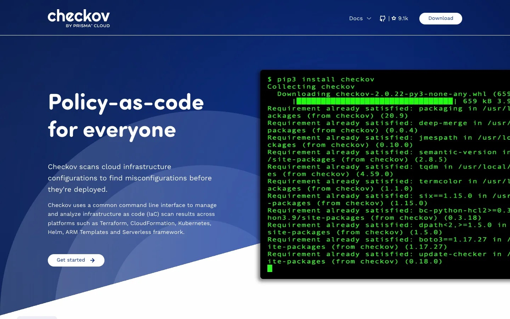
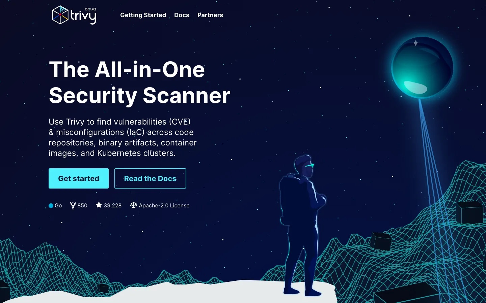
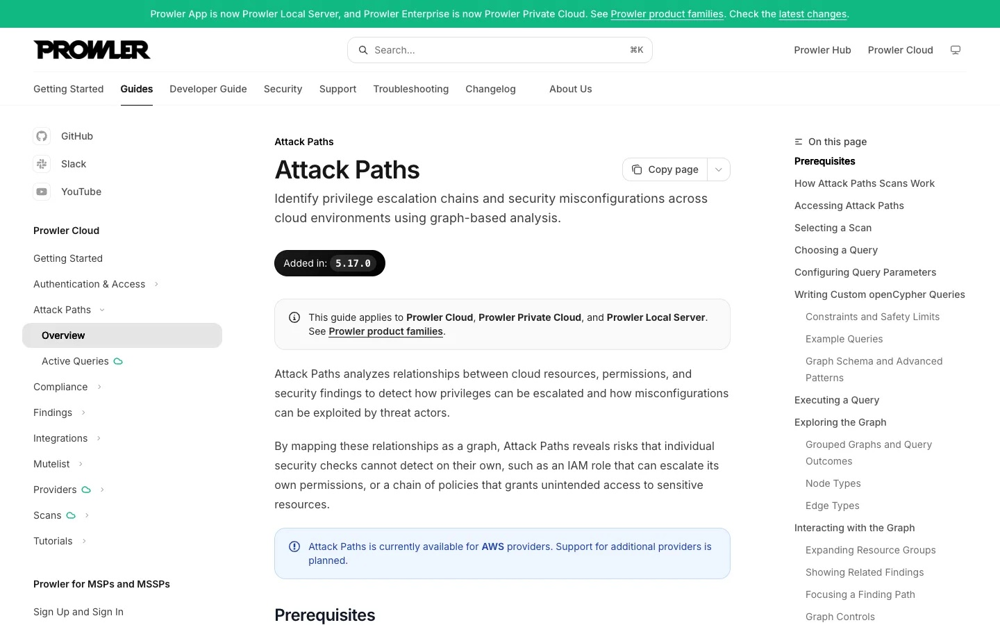
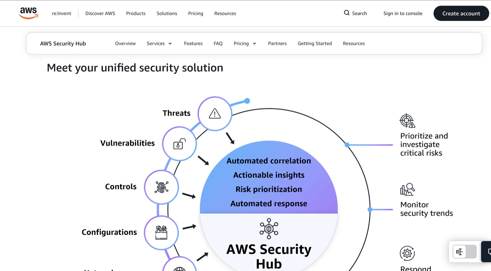
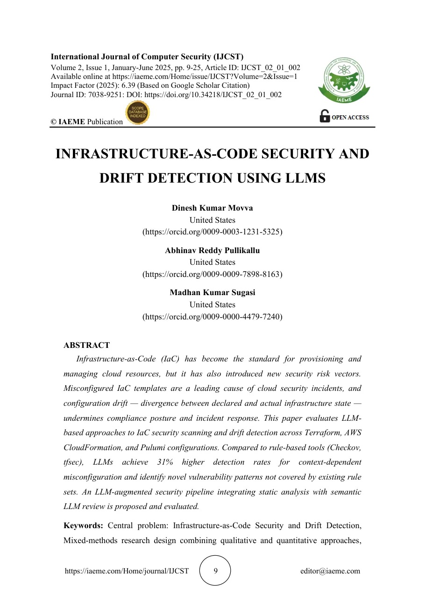
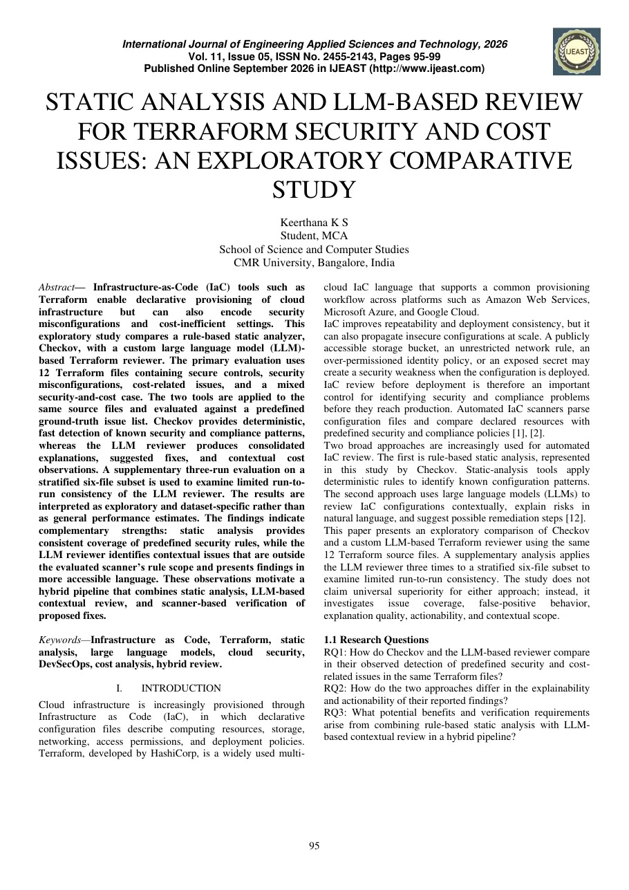
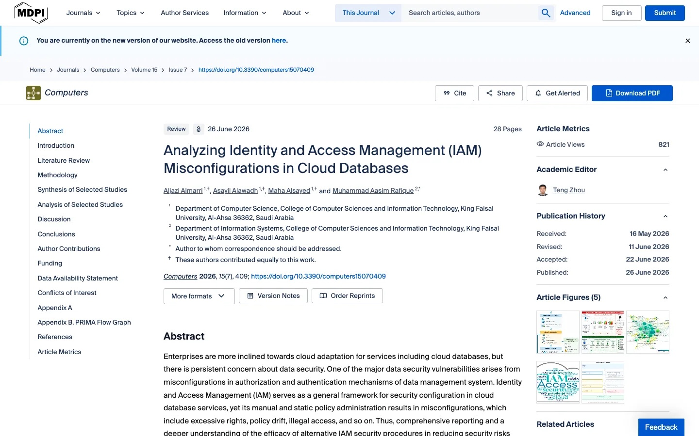

✓SupervisorFA
Dr. Fairuz Amalina Narudin
FYP supervisor
- Role
- Academic guidance on scope, rule selection and evaluation design.
01 · Project Title · Tentative
A Terraform-based, pre-deployment analysis for AWS.
Cloud Security Analyzer · FYP
page 01
Cloud Security Analyzer · FYP
page 02
01 · Project Title
Tentative title. Each part maps to one capability of the analyzer.
Explainable Cloud Security Analyzer with Attack-Path Analysis and AI-Assisted Remediation
Explainable
The exact Terraform line, why it is risky, and how to fix it.
Attack-Path Analysis
Resources, identities and permissions linked into one potential path.
AI-Assisted Remediation
A proposed Terraform fix, reviewed as a diff, then re-checked by the rules.
Cloud Security Analyzer · FYP
page 03
02 · Introduction · Background
02
3 from_port = 22
6 cidr_blocks = ["0.0.0.0/0"]SSH open to the internet
13 vpc_security_group_ids = [aws_security_group.web.id]
14 iam_instance_profile = aws_iam_instance_profile.app.name
29 Action = "s3:*", Resource = "*"every S3 action
33resource "aws_s3_bucket" "records" {no public access block
Cloud Security Analyzer · FYP
page 04
02 · Introduction · Overview
Rules detect. AI suggests. You approve. Rules re-check.
01
Terraform
write main.tf
02
Plan → JSON
terraform show -json
03
Detect
rules · severity · paths
04
AI-assisted fix
proposed patch
05
Review
diff · accept or reject
06
Re-scan
fmt · validate · rules
07
Deploy
your decision
YouAnalyzerAnalyzerAI modelYouAnalyzerYou
potential attack pathother relationships in main.tf
Ranked first: one combined risk, above its separate findings. A potential path from configuration evidence, not a confirmed exploit.
10
declarative rules, each mapped to CIS / AWS guidance.
Cloud Security Analyzer · FYP
page 05
03 · Objectives
Each objective answers one or more problem statements.
01
Identify selected AWS misconfigurations in Terraform with 10 rule-based checks.
Answers PS1
›02
Model resources, identities and permissions to find potential attack paths.
Answers PS1
›03
Evidence-linked findings, contextual ranking, and AI-suggested fixes that the rules re-check.
Answers PS2 · PS3
›04
Labelled Terraform scenarios, compared with Checkov; optional read-only AWS check.
Measures O1–O3
Cloud Security Analyzer · FYP
page 06
04 · Problem Statement
What existing scanners report, and what they leave to the reader.
Today · isolated findings
Needed · connected view
Detect
PS1
Rules check one resource at a time, not how they combine.
Understand
PS2
A finding names the weakness, not its evidence or impact.
Prioritise
PS3
Scored one by one, combined risk stays hidden.
Cloud Security Analyzer · FYP
page 07
05 · Literature Review · Existing solutions
Official pages, captured 11 Nov 2026. Click a card to open the source.




Cloud Security Analyzer · FYP
page 08
05 · Literature Review · Related work
Three verified papers (DOI checked). Click to open.

Movva et al. · 2025
Context-dependent misconfigurations are missed by fixed rules.
Limit its 31% gain is paper-specific

Keerthana · 2026
LLM review adds explanations and suggested fixes to Checkov.
Limit exploratory, 12 Terraform files

Almarri et al. · 2026
Excess permissions lead to privilege escalation: IAM is in scope.
Limit focused on cloud databases
Cloud Security Analyzer · FYP
page 09
06 · Stakeholder Collaboration
Status as of November 2026.
FYP supervisor
Tech community · collaborator
AI & full-stack engineer
Industry perspective
✓Done · AI fix idea from industry input›Planned · practitioners review test scenarios›Planned · clarity check of explanations
Cloud Security Analyzer · FYP
page 10
References
DOIs verified against Crossref, 11 Nov 2026.
Cloud Security Analyzer · FYP
page 11
Questions and feedback are welcome.
Cloud Security Analyzer · FYP
page 12
Rotate your phone for the full slide